codec / numeric to numeric + serial · 2D / lossless
planar_zigzag_lanes
Planar + Zigzag, then PivCo Huffman or PFOR on each residual byte lane, in one codec.
- ctid
- 0x72D712
- header
- uint64 · element count
+ uint8 · element width
+ uint32 · row width
+ uint32 · plane count
+ uint32 · PivCo block size
+ per lane: uint8 mode, uint16 weights, uint32 bitstream - values
- 8 · 16 · 32 · 64-bit numeric elements
- lanes
- one per residual byte: PivCo Huffman,
or byte PFOR where that is smaller - geometry
- width = columns
planes = contiguous independent rasters
Code
geozl.graph(tile, "planar>zigzag>lanes")
